Experimetal Results
Standard Condition
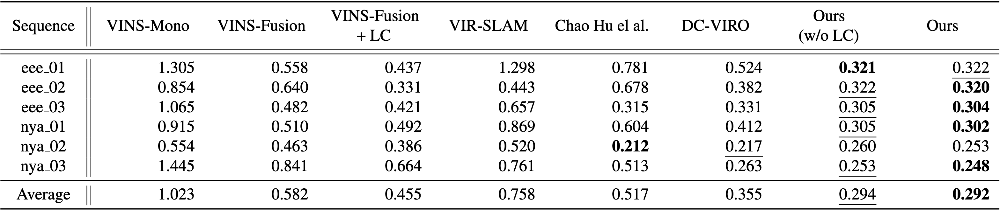
Quantitative Results (RMSE)
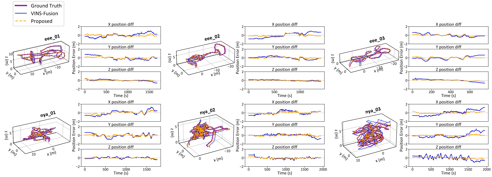
Qualitative Results
Degenerate Scenarios
Simulation Setup
Visual Degradation
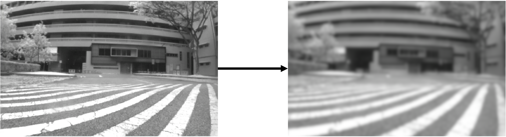UWB Signal Drop
eee_01
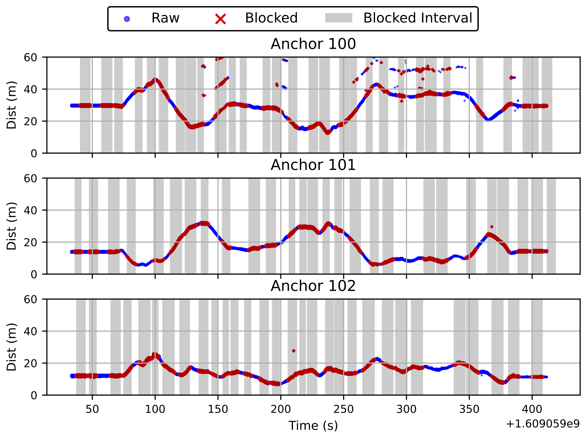
eee_02
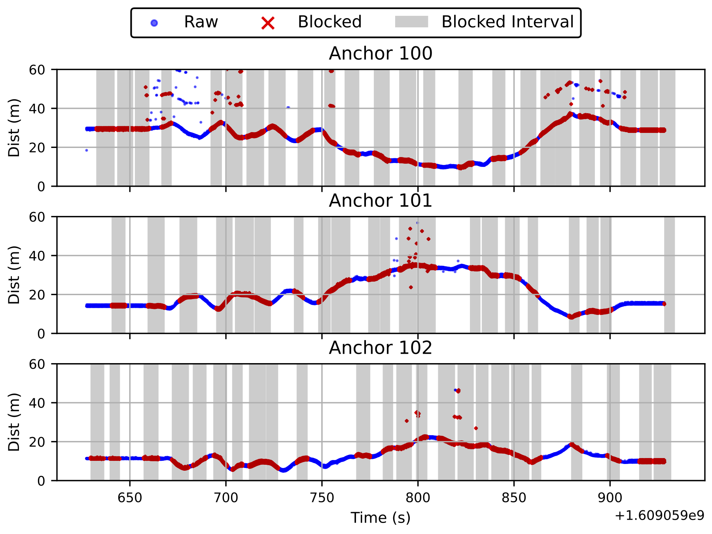
eee_03
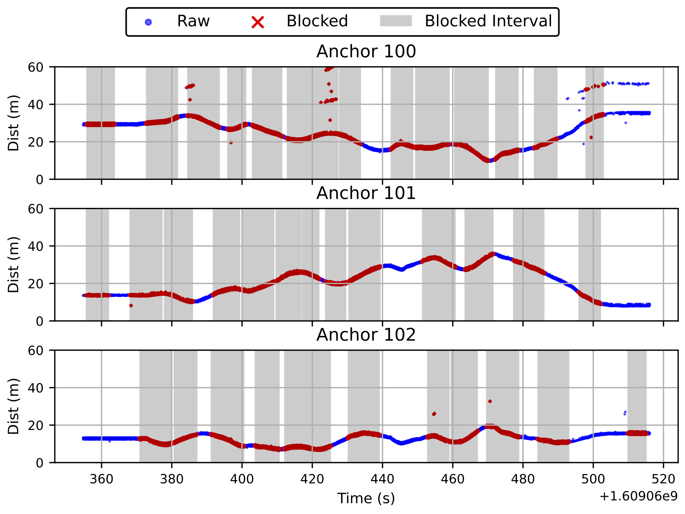
nya_01
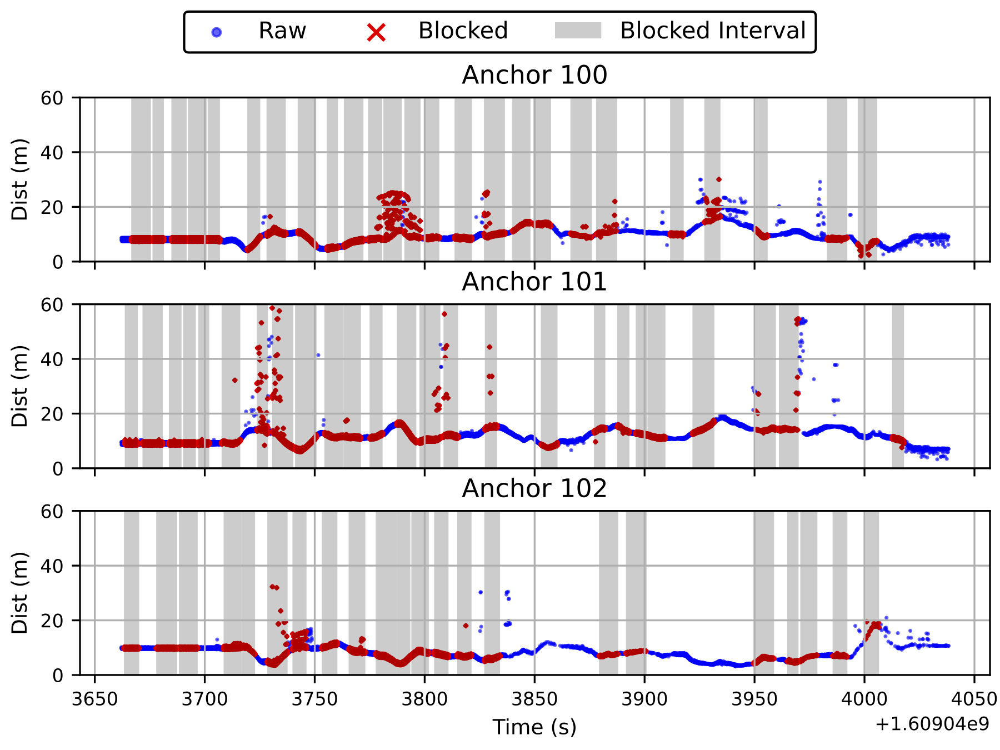
nya_02
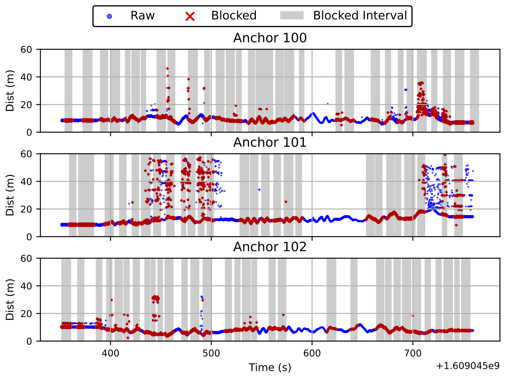
nya_03
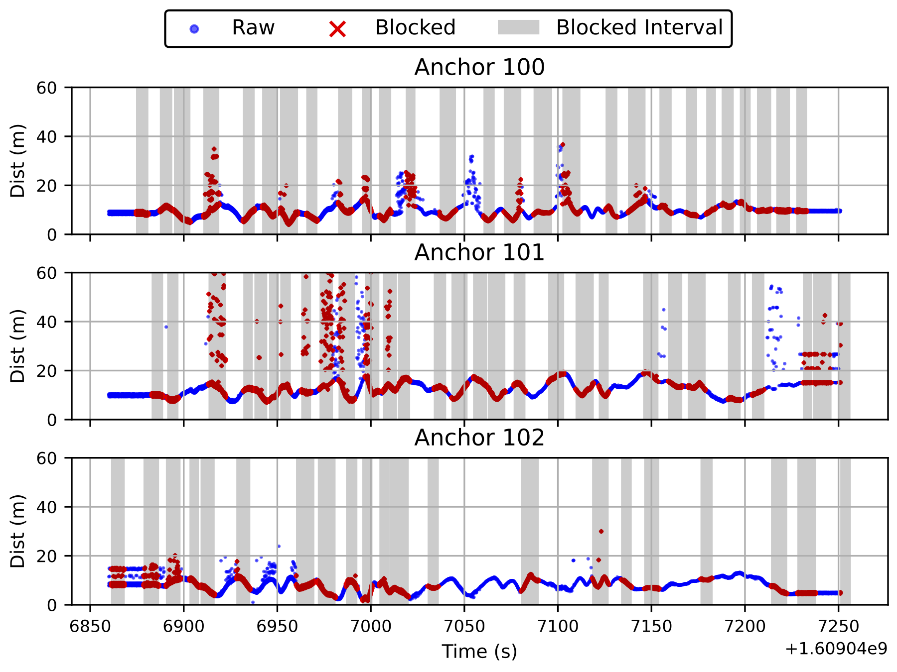
UWB signal dropout

signal drop statistics
Absolute Trajetory Error
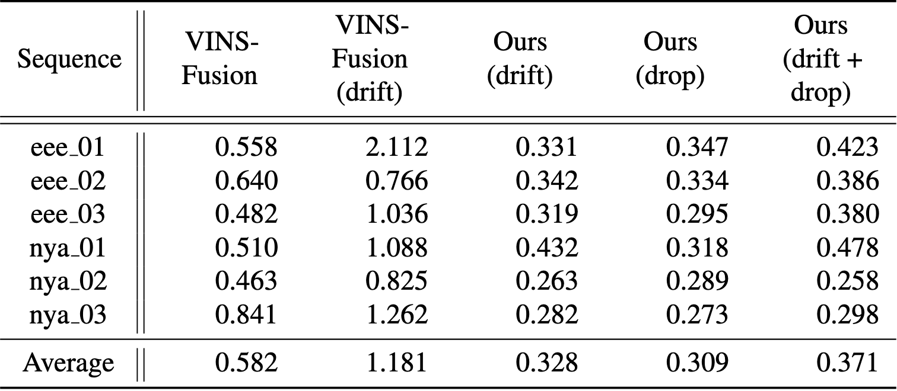
Quantitative Results (RMSE)
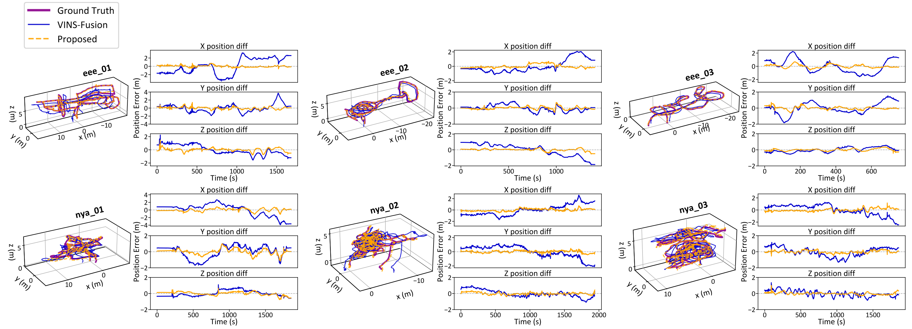
Qualitative Results
Video
Quantitative Results (RMSE)
Qualitative Results